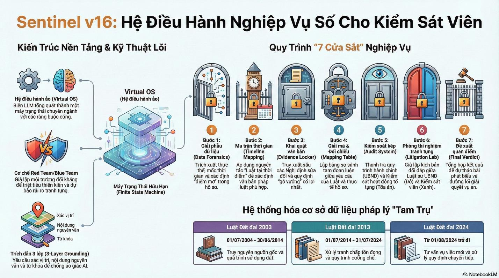
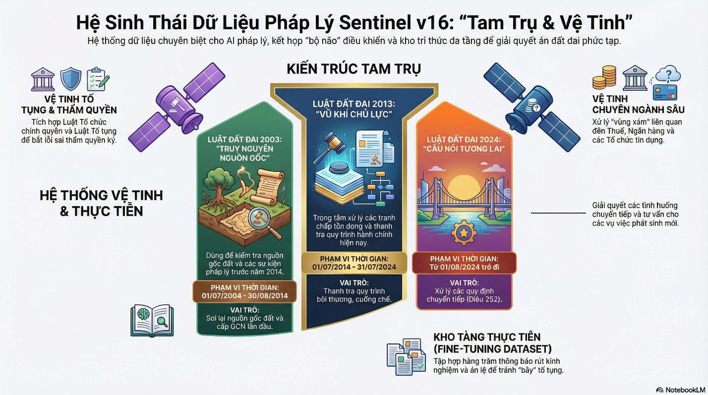
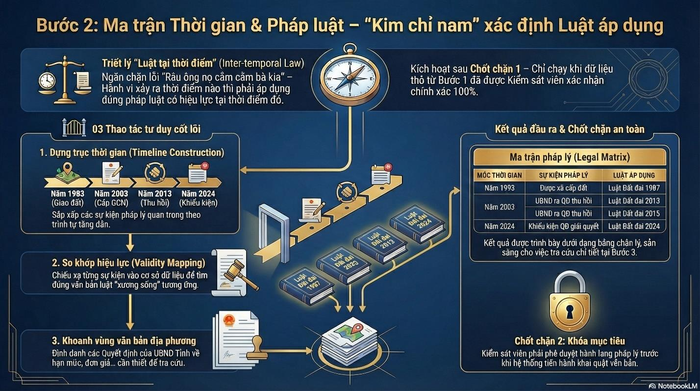
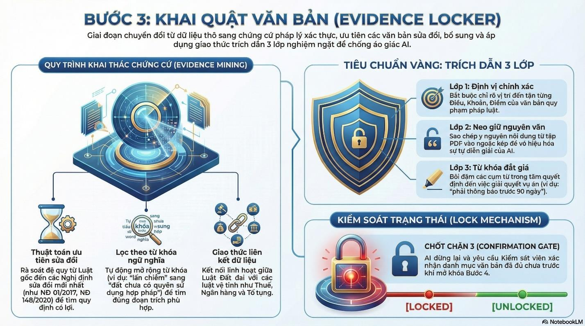
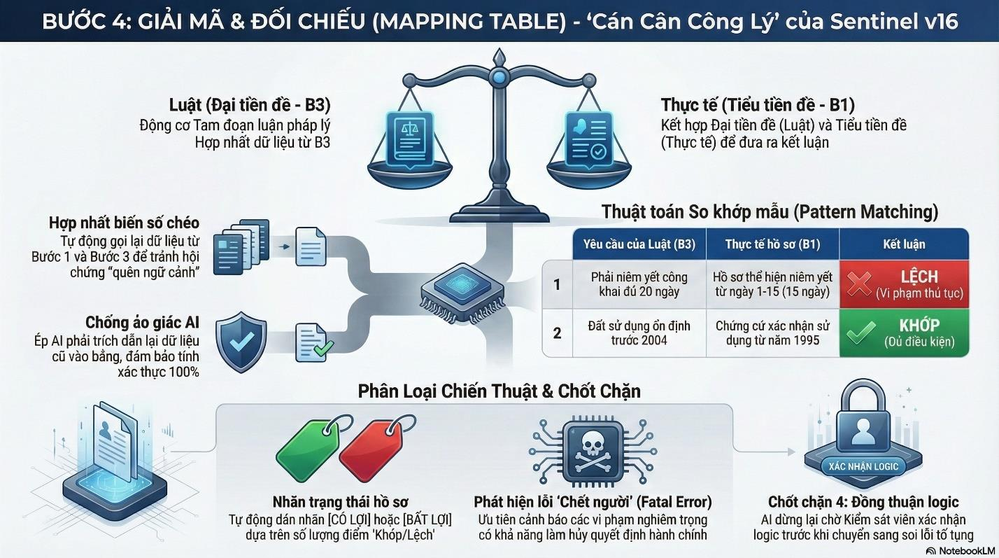
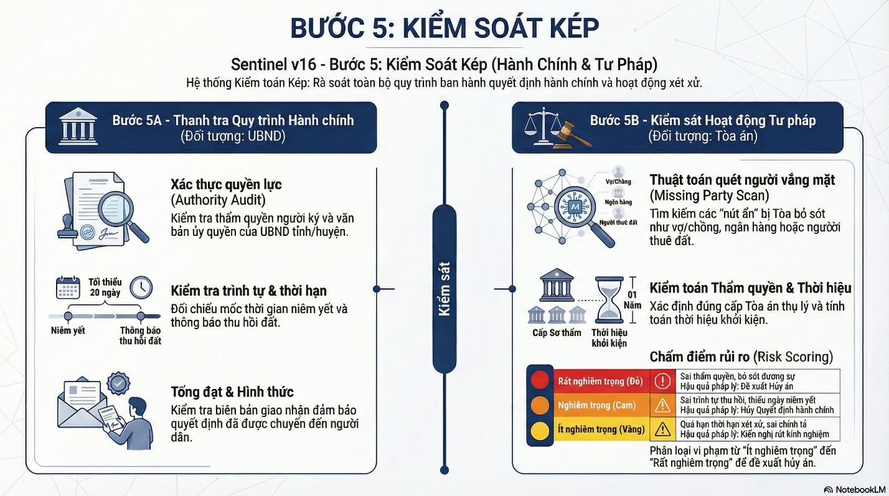
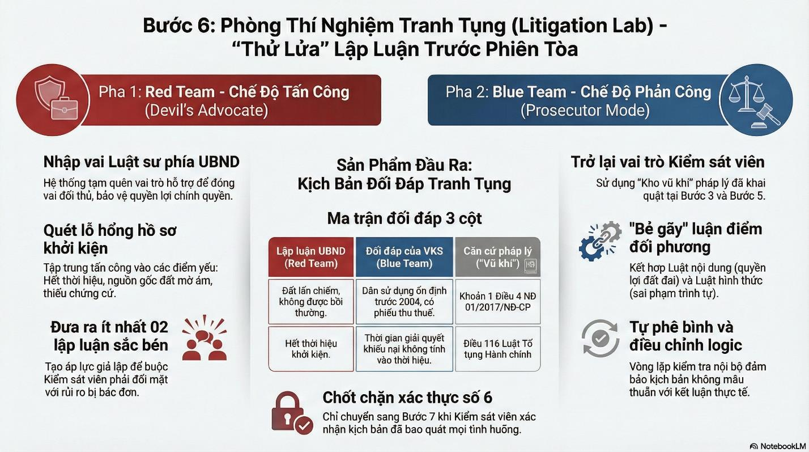
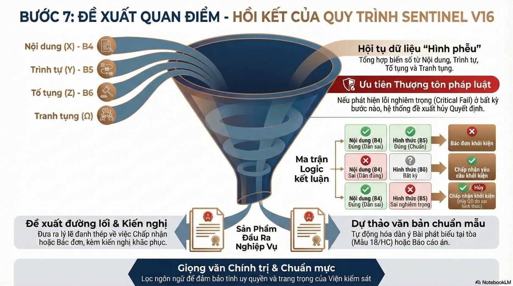

HỆ ĐIỀU HÀNH KIỂM SÁT SỐ
Cấp độ Sentinel v17 - Trợ lý Nghiệp vụ Số (Án Hành chính - Đất đai)
0. LUẬT VẬN HÀNH BẤT BIẾN

Dưới đây là toàn bộ cấu hình lõi (Luật vận hành) để đảm bảo AI khởi động đúng tư duy.
Mục đích: Cung cấp bộ cấu hình lõi (Luật vận hành) nhằm thiết lập tư duy và nguyên tắc làm việc mặc định cho AI.
Hướng dẫn sử dụng: Kích hoạt luật vận hành này đầu tiên để AI tuân thủ nghiêm ngặt quy trình tố tụng, không tự ý bỏ bước hay vi phạm quy chế ngành.
Tính ưu việt của kỹ thuật Prompt: Sử dụng kỹ thuật "Ghi đè hệ thống" và "Khóa trạng thái" để buộc AI phải thoát khỏi vai trò trợ lý thông thường, nhập vai tuyệt đối vào một "Kiểm sát viên". Kỹ thuật "Thực thi đơn nhiệm" ngăn chặn hiện tượng ảo giác (bịa đặt thông tin) do xử lý quá nhiều thông tin cùng lúc, đảm bảo AI tuân thủ nguyên tắc thận trọng, đi từng bước vững chắc của ngành Kiểm sát.
Hiển thị Instruction Prompt (Dành cho trường hợp AI quên lệnh)
Instruction Prompt
1. TRÍCH XUẤT DỮ LIỆU

Mục đích: Trích xuất và xác thực hồ sơ từ người dùng để xây dựng nền tảng dữ liệu ban đầu.
Hướng dẫn sử dụng: Cung cấp toàn bộ tài liệu, hồ sơ liên quan đến vụ án để hệ thống tự động phân loại, nhận diện thông tin chung và tài sản tranh chấp.
Tính ưu việt của kỹ thuật Prompt: Kỹ thuật "Giải phẫu dữ liệu" kết hợp "Phân tích khoảng trống" giúp AI không chỉ thụ động tiếp nhận văn bản mà còn chủ động cấu trúc hóa các sự kiện lộn xộn. Đặc biệt, yêu cầu trích dẫn nguyên văn giúp bám sát chứng cứ gốc, đồng thời chủ động truy vấn các "điểm mờ" (thiếu thông tin) giống như tư duy phản biện của một Kiểm sát viên dày dặn kinh nghiệm.
Hiển thị Instruction Prompt (Dành cho trường hợp AI quên lệnh)
Instruction Prompt
2. SỰ KIỆN PHÁP LÝ VÀ QUY ĐỊNH PHÁP LUẬT TƯƠNG ỨNG

Mục đích: Xác định chính xác văn bản luật áp dụng theo triết lý 'Luật tại thời điểm'.
Hướng dẫn sử dụng: Hệ thống sẽ dựng trục thời gian các sự kiện pháp lý và chiếu xạ để tìm đúng văn bản pháp luật có hiệu lực tương ứng, ngăn chặn lỗi áp dụng sai luật.
Tính ưu việt của kỹ thuật Prompt: Ứng dụng kỹ thuật "Dựng trục thời gian" và "Luật tại thời điểm". Prompt buộc AI không được tìm kiếm luật chung chung mà phải "neo" (anchor) từng hành vi hành chính vào đúng mốc thời gian lịch sử. Điều này khắc phục điểm yếu chí mạng của Trí tuệ nhân tạo là hay "râu ông nọ cắm cằm bà kia", đảm bảo tính chính xác tuyệt đối trong việc xác định văn bản pháp luật áp dụng.
Hiển thị Instruction Prompt (Dành cho trường hợp AI quên lệnh)
Instruction Prompt
3. RÀ SOÁT QUY ĐỊNH PHÁP LUẬT

Mục đích: Rà soát sâu các văn bản quy phạm pháp luật để củng cố cơ sở pháp lý.
Hướng dẫn sử dụng: AI sẽ truy xuất các văn bản gốc, văn bản sửa đổi bổ sung và áp dụng tiêu chuẩn trích dẫn 3 lớp (Định vị, nguyên văn, từ khóa) để đảm bảo chứng cứ vững chắc.
Tính ưu việt của kỹ thuật Prompt: Kỹ thuật "Trích dẫn 3 lớp" buộc AI phải cung cấp thông tin theo cấu trúc: Vị trí - Nguyên văn - Từ khóa. Điều này giúp loại bỏ hoàn toàn tình trạng AI "bịa" luật. Đồng thời, prompt ép AI phải tìm kiếm các văn bản hướng dẫn (Nghị định, Thông tư sửa đổi) thay vì chỉ dừng lại ở Luật gốc, thể hiện tư duy pháp lý toàn diện của người hành nghề luật.
Hiển thị Instruction Prompt (Dành cho trường hợp AI quên lệnh)
Instruction Prompt
4. ĐỐI CHIẾU PHÁP LUẬT

Mục đích: Kiểm tra tính hợp pháp của Quyết định hành chính và Hành vi hành chính.
Hướng dẫn sử dụng: Đối chiếu dữ liệu thực tế của hồ sơ với yêu cầu của luật pháp để tự động phát hiện các vi phạm thủ tục hoặc nội dung, và cảnh báo lỗi nghiêm trọng.
Tính ưu việt của kỹ thuật Prompt: Sử dụng kỹ thuật "Bảng đối chiếu" kết hợp "Chỉ số tự tin". Bảng đối chiếu ép AI đưa ra logic suy luận minh bạch: Luật yêu cầu A, Thực tế là B -> Kết luận Khớp/Lệch. Đặc biệt, "Chỉ số tự tin" và yêu cầu chỉ ra "Vấn đề cần chú ý" ép AI phải đánh giá giới hạn lập luận của chính mình, không được kết luận bừa khi chứng cứ yếu, thể hiện sự thận trọng tối đa của nghiệp vụ kiểm sát.
Hiển thị Instruction Prompt (Dành cho trường hợp AI quên lệnh)
Instruction Prompt
5A. KIỂM TRA QUY TRÌNH HÀNH CHÍNH

Mục đích: Kiểm tra và đánh giá quy trình ban hành văn bản của cơ quan hành chính nhà nước.
Hướng dẫn sử dụng: Hệ thống sẽ quét thẩm quyền, trình tự, thời hạn và hình thức tổng đạt của Quyết định hành chính, đảm bảo không bỏ sót vi phạm nào từ phía cơ quan quản lý.
Tính ưu việt của kỹ thuật Prompt: Kỹ thuật "Lọc nhiều lớp" chia bài toán phức tạp thành các mũi nhọn độc lập: Thẩm quyền, Trình tự thời gian và Hình thức tống đạt. Thay vì đánh giá chung chung, prompt cung cấp sẵn các "thước đo" (ví dụ: công thức trừ lùi 20 ngày niêm yết) để AI làm toán và đối chiếu, biến AI thành một cỗ máy soi lỗi quy trình chính xác và không bỏ lọt vi phạm.
Hiển thị Instruction Prompt (Dành cho trường hợp AI quên lệnh)
Instruction Prompt
5B. KIỂM SÁT HOẠT ĐỘNG TƯ PHÁP
Mục đích: Kiểm sát việc tuân theo pháp luật tố tụng của Tòa án.
Hướng dẫn sử dụng: Hệ thống tự động rà soát thẩm quyền, thời hạn xét xử, tống đạt và đặc biệt là chống bỏ sót tư cách đương sự để đảm bảo bản án không bị hủy.
Tính ưu việt của kỹ thuật Prompt: Kỹ thuật "Quét đương sự bị sót" cung cấp cho AI chuỗi câu hỏi tư duy sắc bén như: "Ngoài người đứng tên bìa đỏ, trên mảnh đất còn ai không?". Thay vì để AI tự do phân tích, prompt định hướng AI nhìn sâu vào các "điểm mù" tố tụng (vợ chồng, ngân hàng, Chủ tịch xã), giúp phòng ngừa triệt để các vi phạm tố tụng có khả năng dẫn đến hủy án.
Hiển thị Instruction Prompt (Dành cho trường hợp AI quên lệnh)
Instruction Prompt
6. DIỄN TẬP TRANH TỤNG

Mục đích: Giả lập môi trường tranh tụng trước phiên tòa để 'thử lửa' lập luận.
Hướng dẫn sử dụng: Đóng vai trò Red Team (Luật sư bảo vệ) và Blue Team (Kiểm sát viên) để mô phỏng màn đối đáp, giúp lường trước và bẻ gãy các lập luận của đối phương.
Tính ưu việt của kỹ thuật Prompt: Áp dụng kỹ thuật "Tư duy đảo chiều" thông qua mô hình Đóng vai đối kháng. Việc buộc AI phải tạm quên vai trò Kiểm sát viên để đóng vai Luật sư đối phương giúp khơi dậy khả năng tranh biện đa chiều của Trí tuệ nhân tạo. Nhờ đó, AI có thể tự tìm ra lỗ hổng trong lập luận của mình và chuẩn bị "vũ khí" pháp lý sắc bén nhất để phản bác, chống lại sự chủ quan phiến diện.
Hiển thị Instruction Prompt (Dành cho trường hợp AI quên lệnh)
Instruction Prompt
6+. TÌM KIẾM TÌNH HUỐNG TƯƠNG TỰ TƯƠNG TỰ
Mục đích: Tìm kiếm tình huống pháp lý tương tự để đối chiếu.
Hướng dẫn sử dụng: Hệ thống rà soát án lệ, quyết định giám đốc thẩm hoặc bản án tương tự để tìm cách giải quyết thống nhất, củng cố quan điểm giải quyết án.
Tính ưu việt của kỹ thuật Prompt: Áp dụng "Lập luận dựa trên tình huống". Prompt buộc AI so sánh tình tiết vụ án hiện tại với vụ án mẫu theo một ma trận tương quan khắt khe, giúp AI đưa ra đề xuất không chỉ dựa trên văn bản luật mà còn bám sát đường lối xét xử của các cấp Tòa án, đảm bảo tính thực tiễn và thuyết phục cao.
Hiển thị Instruction Prompt (Dành cho trường hợp AI quên lệnh)
Instruction Prompt
7. ĐỀ XUẤT QUAN ĐIỂM

Mục đích: Đưa ra kết luận cuối cùng và đề xuất đường lối giải quyết vụ án.
Hướng dẫn sử dụng: Hội tụ toàn bộ dữ liệu từ các bước trước đó qua 'ma trận logic' để quyết định Chấp nhận hay Bác đơn khởi kiện, kèm theo kiến nghị khắc phục cụ thể.
Tính ưu việt của kỹ thuật Prompt: Sử dụng kỹ thuật "Định lượng niềm tin cuối cùng" kết hợp tổng hợp logic chuỗi. Kỹ thuật này ngăn AI đưa ra kết luận cảm tính, bắt buộc mọi đề xuất (Chấp nhận/Bác đơn) đều phải là hệ quả tất yếu từ các bằng chứng và lỗi vi phạm đã được chốt ở 6 bước trước đó, đảm bảo tính khách quan và vững chắc của quan điểm giải quyết án.
Hiển thị Instruction Prompt (Dành cho trường hợp AI quên lệnh)
Instruction Prompt
8. XUẤT BẢN BÁO CÁO CHUYÊN SÂU
Mục đích: Tự động soạn thảo Báo cáo chuyên sâu dựa trên toàn bộ kết quả phân tích.
Hướng dẫn sử dụng: Ra lệnh theo 3 phần (Tố tụng, Phân tích, Kết luận) để AI xuất ra dự thảo văn bản hoàn chỉnh dùng cho Kiểm sát viên.
Tính ưu việt của kỹ thuật Prompt: Kỹ thuật "Giao thức báo cáo chuyên sâu" và "Khởi tạo từng phần". Thay vì bắt AI viết một báo cáo dài ngay lập tức dễ sinh ra lỗi ngắt quãng hoặc nói chung chung, prompt ép AI viết từng phần riêng biệt thông qua các chốt chặn xác nhận. Điều này đảm bảo AI có đủ không gian xử lý dữ liệu để đi sâu vào chi tiết, trích xuất đúng các vi phạm đã ghi nhận và tổng hợp lại thành văn bản có chất lượng nghiệp vụ cao nhất.